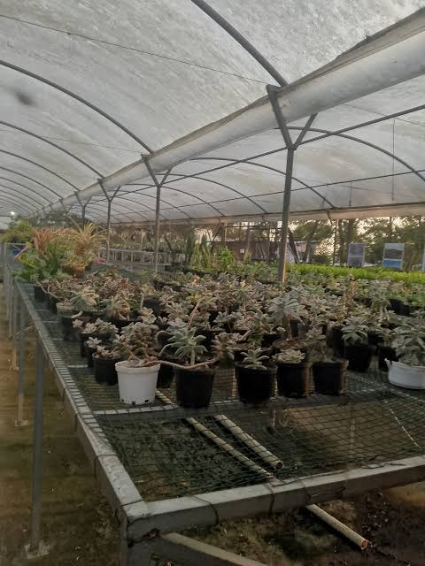

Corporación 01 · Jardineras y Jardineros
Cojardicom: Raíces que sanan la montaña de basura
Fundada en 2014, la Corporación de Jardineras y Jardineros Comunitarios de Moravia (Cojardicom) canalizó décadas de reclamo por la vida digna en un oficio botánico transformador. Lo que inició como supervivencia en torno al botadero municipal se convirtió en la mayor experiencia de recuperación ecológica comunitaria de Medellín.
Lideresas como Elsy Torreglosa y Rosa Giraldo consolidaron técnicas de fitorremediación y semilleros ornamentales, demostrando que donde la ciudad descargó 1,5 millones de toneladas de residuos hoy florece patrimonio botánico vivo.

Ver Recorrido Cojardicom
Memoria Botánica
COJ
Invernadero y parcelas ornamentales cultivadas en la cima.